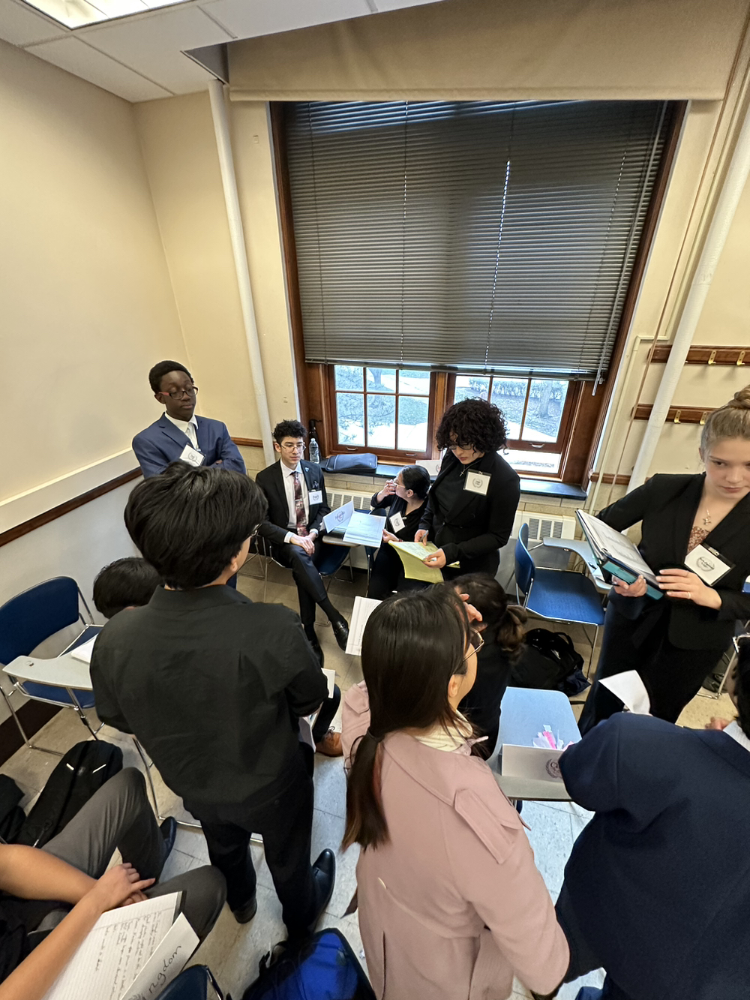
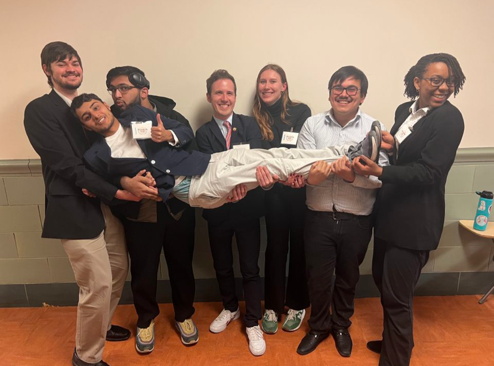
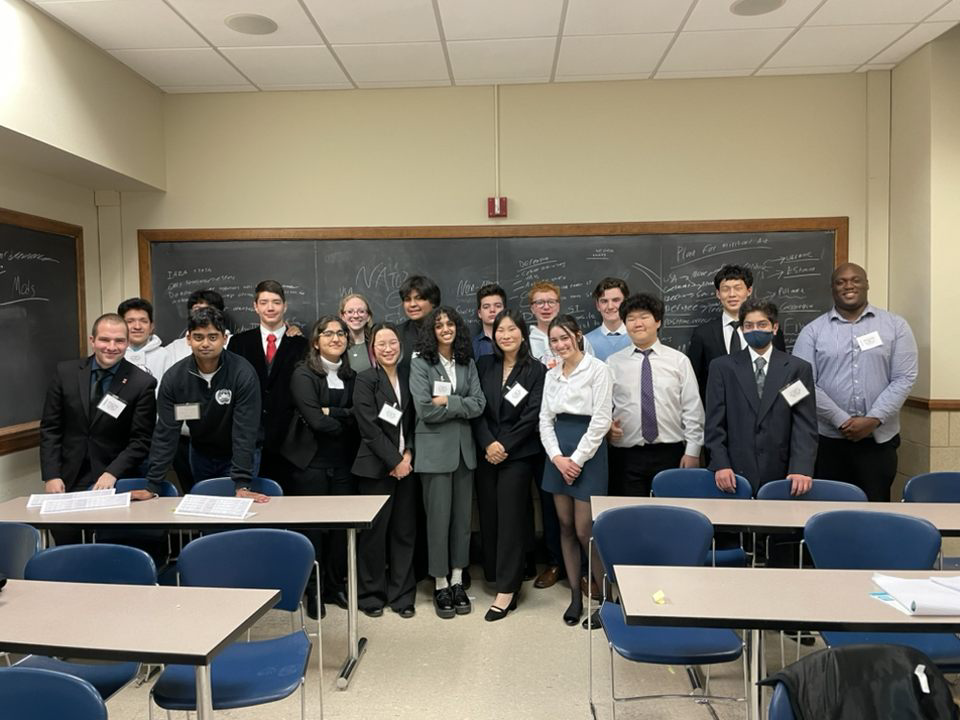

We are Illinois MUN.
Secretariat
Nafisa Khan
Secretary General
LAS '26
| Political science
Hi everyone! My name is Nafisa Khan and I’m currently a sophomore majoring in
Political
Science and Economics from Aurora, Illinois. I’ll be graduating from the College
of
LAS
in May 2026! Last year, I served as political officer for MUNI XXV’s UN
Development
Programme. This year, apart from working as your USG of Design and Merchandise
for
MUNI
XXVI, I’m also serving on the IMUN executive board as the club secretary.
Outside of MUN, you can find me writing periphrastic fantasy novels, listening
to
kpop
and bollywood music, trying new recipes, or making really detailed homework
schedules
that I usually abandon. I’m also involved in social science research programs
here
on
campus, as well as the creative writing club and AAA! I can’t wait to meet all
of
you
and show y’all the exciting merch we have in store for MUNI XXVI! See you all
this
April!
Divij Garg
USG of
Rules/Regulations
LAS
'26 | CS + Math
Hi! My name is Divij Garg and I’m currently a junior majoring in Computer
Science and Mathematics. I have been involved with Illinois MUN
for the past 3 years now, serving as director of the UNDP in Spring 2023/MUNI
XXV,
Vice President
Internal in Fall 2023, President in Spring 2024, and director of UNESCAP in
Spring
2024/MUNI XXVI.
Alongside serving as the USG of Rules/Regulations this year, I am directing the
UN
Security Council, our first hybrid committee!
Outside of MUN, I am a part of the Illinois Space Society as part of
their rocketry team helping code flight software. You can always find me doing
photography on campus and driving
to dark-sky parks: my favorite is astrophotography. I've also played the violin
now
for around 9 years and absolutely enjoy
traveling and exploring new places.
Sohail Sajdeh
USG of Registration
LAS
'28 | Economics
Hi, my name is Sohail Sajdeh and I am a first-year majoring in Economics! While this is
my first year involved with Illinois MUN, I have spent over 5 years competing in the
high-school MUN scene. I have travelled to some of the nation's top high-school
conferences, winning awards at Georgetown, Northwestern and Yale, gaining lots of
experience and knowledge about the activity to run a successful conference. Alongside my
role as USG of Registration, I am also the director for UNESCO, one of our large General
Assembly Committees.
Outside of MUN, I am part of Illinois' American Marketing Association branch, working in
the Consulting Committee to help local businesses with pro-bono consulting services.
Off-campus, I also coach soccer at local youth club, Illinois FC, as the assistant coach
of the U-18 Boys Team for this upcoming spring season. In my free time, I enjoy playing
and watching sports with my friends, and trying out new food spots on campus. I look
forward to seeing and meeting so many of you in Champaign this April!
Aryan Trivedi
USG of Committees
LAS
'26 | Economics
Hello! My name is Aryan Trivedi, and I’m currently a senior majoring in Economics
(Pre-Law) and minoring in Environmental Economics and Law. I’ve been involved with
Illinois MUN for the past year, and I’m excited to serve as the Under Secretary General
of Committees this year.
Outside of MUN, you would probably find me at the badminton court, singing, volunteering
or experimenting in the kitchen (cooking is my go to stress reliever). I’m also a big
fan of gaming, with DOTA 2 being my favorite way to unwind.
Aryan Trivedi
USG of Committees
LAS
'26 | Economics
Hello! My name is Aryan Trivedi, and I’m currently a senior majoring in Economics
(Pre-Law) and minoring in Environmental Economics and Law. I’ve been involved with
Illinois MUN for the past year, and I’m excited to serve as the Under Secretary General
of Committees this year.
Outside of MUN, you would probably find me at the badminton court, singing, volunteering
or experimenting in the kitchen (cooking is my go to stress reliever). I’m also a big
fan of gaming, with DOTA 2 being my favorite way to unwind.
Josephine Lee
USG of Logistics
LAS
'26 | CS + ECON & POLITICAL SCIENCE
Hello everyone! My name is Josephine Lee. I am currently a junior majoring in Computer
Science + Economics and double-majoring in Political Science. I have been involved with
Illinois MUN for the past 2 years, serving as the Chair of US Senate (GA committee) in
Spring 2024/MUNI XXVI, and the Fundraising Committee Chair of the club during the
2024-2025 academic year.
OOutside of MUN, I served as the co-lead of ACM SIGCHI (Human-Computer Interaction). I
enjoy designing user interfaces (UI) and conducting user experience (UX) research. In my
free time, I enjoy cooking and exploring new restaurants. Meal prepping and enjoying
delicious food (and sleeping!) are my favorite ways to relax and relieve stress. I hope
you all have a wonderful time and memorable experience at MUNI XXVII this year!

UN Development Programme [MUNI XXV]

Director Shenanigans

NATO/OTAN [MUNI XXV]